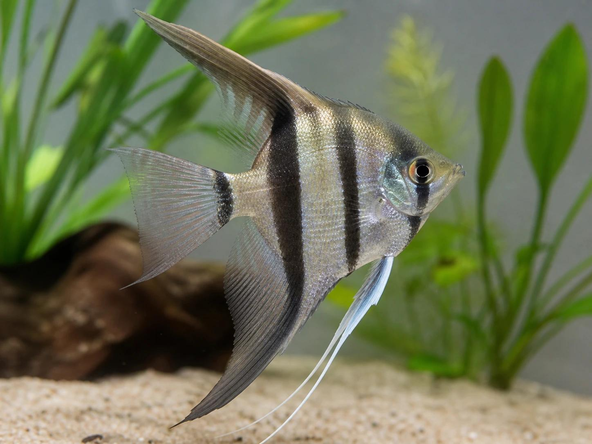
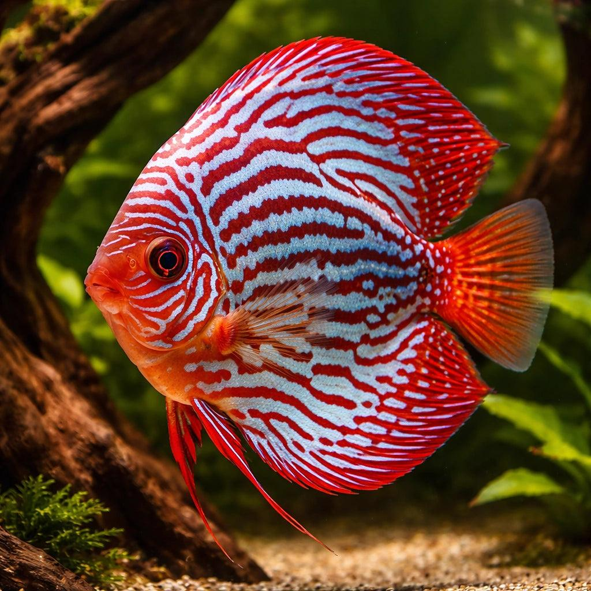

Conoce los Peces Tropicales
Los peces tropicales de agua dulce son conocidos por sus colores, formas y comportamientos. Muchas especies provienen de ríos y lagunas de regiones cálidas, como la cuenca del Amazonas. En esta sección conoceremos dos especies muy populares en la acuariofilia: los peces ángel y los peces disco.
Pez Ángel o Escalar
Nombre científico: Pterophyllum scalare.
El pez ángel, también conocido como escalar, es una especie de agua dulce originaria de Sudamérica. Se caracteriza por su cuerpo comprimido lateralmente, sus aletas largas y su forma triangular. Existen diferentes variedades de colores, como plateados, negros, blancos, marmoleados y koi.

Características principales
- Temperatura recomendada: 25 a 28 °C.
- pH aproximado: 6.0 a 7.5.
- Comportamiento generalmente tranquilo.
- Puede volverse territorial al reproducirse.
- Necesita un acuario con buena altura.
- Puede vivir varios años con buenos cuidados.
Alimentación
Los peces ángel son omnívoros. Pueden consumir alimentos comerciales de buena calidad, artemia, larvas y otros alimentos adecuados para peces tropicales.
Reproducción
Los escalares forman parejas reproductoras y suelen depositar sus huevos sobre superficies verticales, como hojas anchas, troncos o tubos. Ambos padres pueden participar en el cuidado de los huevos y las crías.
Pez Disco
Nombre científico: Symphysodon spp.
Los peces disco son originarios de la cuenca amazónica y destacan por su cuerpo redondeado y sus colores llamativos. Son considerados peces muy atractivos, pero requieren mayor atención a la calidad del agua y a la estabilidad de las condiciones del acuario.

Características principales
- Temperatura habitual: 28 a 30 °C.
- pH orientativo: 6.0 a 7.0.
- Son peces sociales que suelen mantenerse en grupos.
- Necesitan acuarios amplios y estables.
- Son sensibles a cambios bruscos del agua.
- Existen variedades azules, rojas y turquesas.
Alimentación
Los peces disco necesitan una dieta variada y de buena calidad. Se pueden alimentar con pellets especiales para discos, alimentos congelados adecuados y otras opciones nutritivas.
Reproducción
Los discos depositan sus huevos sobre superficies verticales. Una característica muy especial es que las crías recién nacidas, cuando comienzan a nadar libremente, se alimentan de una secreción nutritiva producida por la piel de sus padres.
¿Cuál es más fácil de cuidar?
Los peces ángel suelen ser una opción más sencilla para personas que ya conocen los cuidados básicos de los acuarios tropicales. Los peces disco requieren mayor experiencia, especialmente en el control de la temperatura, la alimentación y la calidad del agua.
Antes de adquirir cualquiera de estas especies, es importante investigar el tamaño del acuario y las necesidades de los ejemplares.